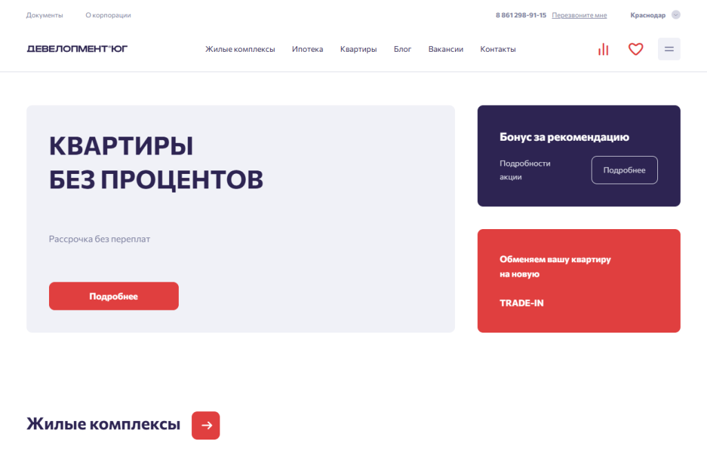
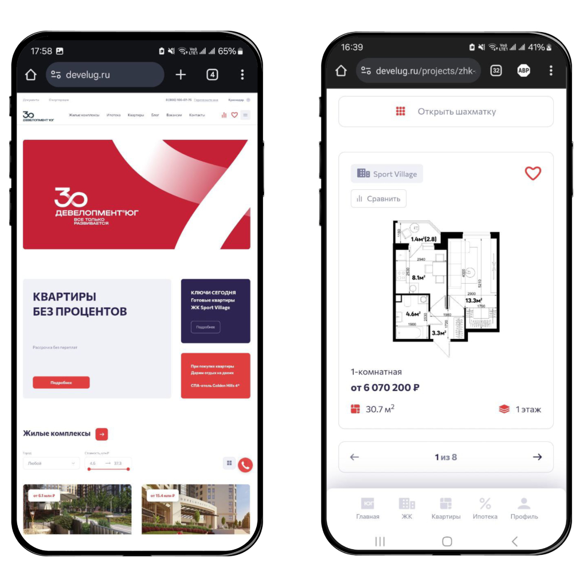
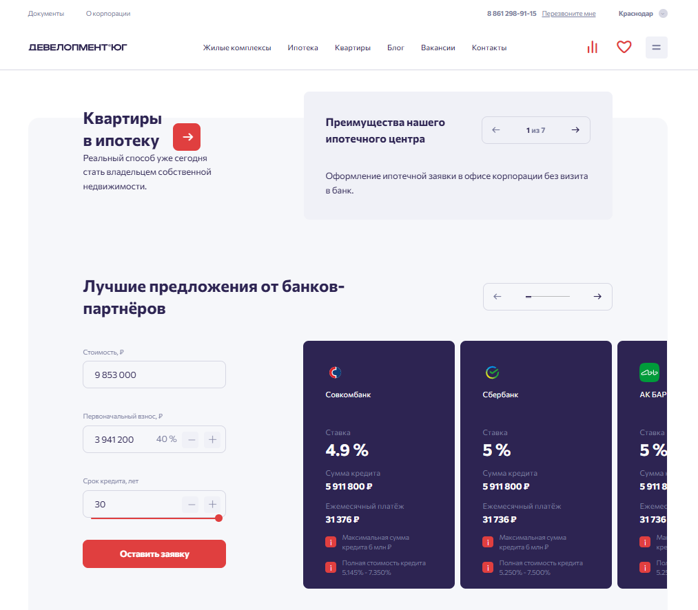
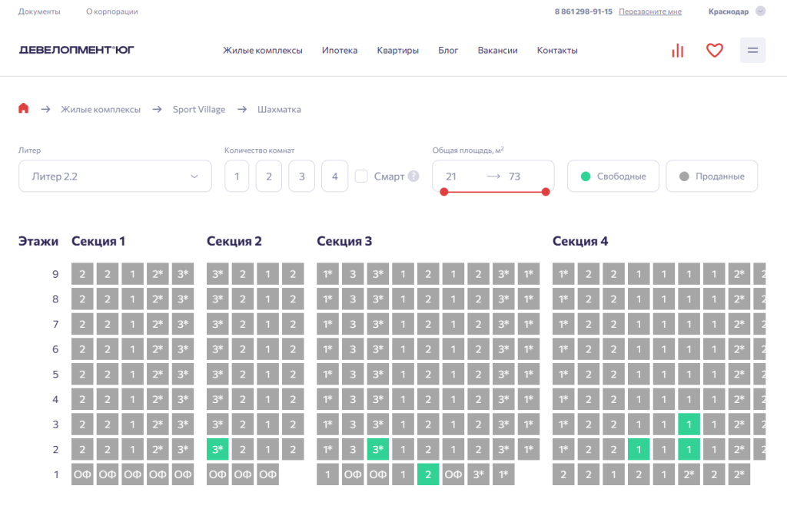
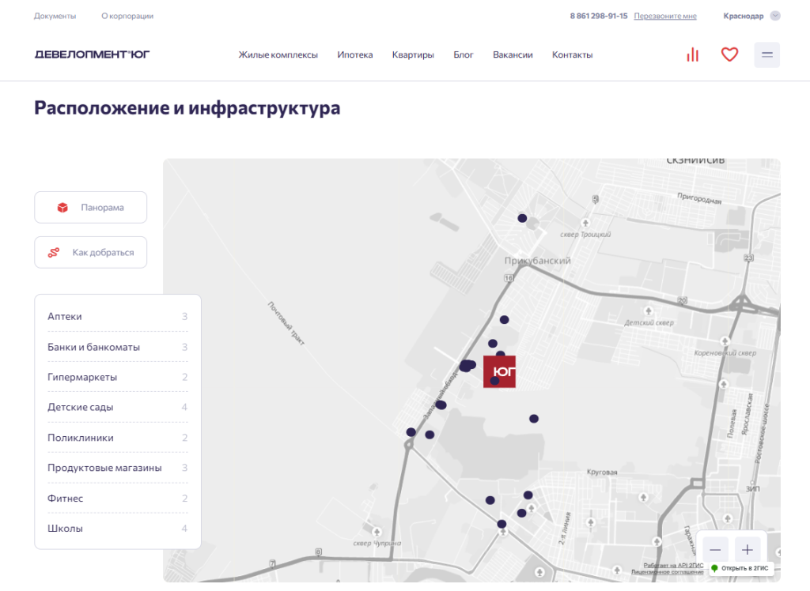

О проекте
Выбирать квартиру — это как собирать пазл: пока не найдешь все нужные детали, картина не сложится. Вот здесь на помощь приходят современные сайты с каталогами недвижимости, которые превращают долгие поиски в увлекательный и продуктивный процесс. Но как сделать такой сайт?
Наше агентство завершило работу над сайтом для корпорации «Девелопмент-ЮГ», и мы с радостью расскажем, как с нуля разработали функциональный портал, помогающий покупателям находить квартиры своей мечты.
Задача
Разработать сайт для корпорации «Девелопмент-ЮГ» с каталогом объектов недвижимости, который не просто облегчит пользователям выбор жилья, но и станет удобным инструментом для анализа предложений и оформления покупки. Реализовать функционал поиска, фильтрации, сравнения объектов, сохранения в избранное, а также личный кабинет с возможностью бронирования и просмотра ипотечных предложений.
Клиент
Корпорация «Девелопмент-ЮГ» — один из лидеров рынка жилой недвижимости в южных регионах России. Компания реализует масштабные проекты строительства жилых комплексов, активно внедряя инновации в своей работе. Она первой внедрила монолитно-каркасную технологию строительства, банковское проектное финансирование ЖК, квартиры с террасами и многое другое. Важной частью их стратегии является создание удобного цифрового пространства для взаимодействия с клиентами и партнерами.
Анализ и планирование
Мы начали с детального анализа сайтов конкурентов, чтобы понять, какие инструменты помогают пользователям наиболее эффективно взаимодействовать с каталогом объектов недвижимости. Также провели функциональный анализ текущего сайта корпорации, выявили слабые стороны и собрали рекомендации по SEO для улучшения структуры нового портала. Важным моментом стала работа с опытом пользователей, чтобы узнать, с какими трудностями они сталкиваются при поиске недвижимости онлайн.
На этом этапе были собраны и согласованы требования с заказчиком, после чего определена архитектура системы и выбраны технологии для разработки. Основной движок сайта — Winter CMS, выбран из-за его гибкости и мощной административной панели. Для фронтенда было решено использовать Vue.js и Nuxt.js, чтобы создать динамичный и отзывчивый пользовательский интерфейс.
Проектирование и дизайн
В процессе разработки дизайна мы стремились создать интуитивно понятный и функциональный дизайн, который будет отвечать требованиям современного UX/UI и учитывать технические рекомендации SEO. Важным аспектом стал перенос портала новостей компании на сайт, который был интегрирован в раздел Блог, мультирегиональность портала и — пожалуй, одна из самых сложных задач — создание условий для легкой работы с обилием информации и интерактива даже на мобильных устройствах.
На этапе проектирования был создан интерактивный прототип, чтобы визуализировать ключевые элементы дизайна и их поведение на сайте. Мы предусмотрели адаптивность дизайна, чтобы он гармонично смотрелся как на десктопах, так и на мобильных устройствах. Важные решения были приняты на основе функционального анализа сайтов конкурентов и поведения пользователей.
Ключевым этапом также стал учёт рекомендаций SEO. Мы продумали структуру страниц и разделов так, чтобы она была максимально оптимизирована для поисковых систем, а также предлагала удобные для пользователя навигационные решения.

Разработка
Серверная часть сайта построена на Laravel Framework, что обеспечивает безопасность и масштабируемость системы. Laravel используется для создания сложной логики взаимодействия с базой данных, управления пользователями и обработки API-запросов с учетом масштабирования сайта по мере роста корпорации и увеличения базы данных объектов недвижимости. Все запросы к серверу обрабатываются быстро, что обеспечивает стабильную работу ресурса даже при большом количестве пользователей.
Ключевые особенности
- Winter CMS: админ-панель сайта основана на Winter CMS с функциями редактирования статических страниц, баннеров, новостей, вакансий, телефонов и ссылок, медиа-материалов. Все обновления и правки вносятся через интуитивно понятный интерфейс. Администраторы могут настраивать мета-теги, ЧПУ (человеко-понятные ссылки), а также следить за индексацией сайта.
- API интеграции: ипотечные калькуляторы и данные по объектам недвижимости подтягиваются через запросы к внешним API. Это обеспечивает синхронизацию информации о квартирах, ценах, и статусе бронирования в режиме реального времени.
- Система личных кабинетов: пользователи могут создавать личные кабинеты, управлять избранными объектами, просматривать забронированные лоты и получать актуальные предложения.
На фронтенде использовали Vue.js и Nuxt.js. Эти фреймворки помогают создавать динамичный интерфейс, который мгновенно реагирует на действия пользователей, обновляя информацию без полной перезагрузки страницы (SPA).
- Vue.js: используется для создания компонентов пользовательского интерфейса. Например, компонент для фильтрации и сравнения объектов недвижимости позволяет пользователю быстро находить нужные квартиры и сохранять их в избранное.
- Nuxt.js: фреймворк для построения серверного рендеринга, который обеспечивает быструю загрузку страницы и улучшенную SEO-оптимизацию. Благодаря Nuxt.js сайт загружается быстрее и имеет высокие показатели по Google Lighthouse.
Верстка выполнена с учётом поддержки всех современных браузеров: Google Chrome, Mozilla Firefox, Microsoft Edge, Safari и Opera. Разрешение экрана адаптируется под различные устройства — от мобильных телефонов до больших десктопных мониторов (от 320px до 1440px). При необходимости скрываются или упрощаются элементы на мобильных устройствах, что способствует быстрому отклику и комфортному просмотру на смартфонах.

1 сайт — 6 регионов
Одним из ключевых аспектов разработки сайта для компании «Девелопмент-Юг» стала реализация мультирегиональности. Это означало, что для каждого из шести регионов, где компания представлена, нужно было разработать свою посадочную страницу с уникальным контентом и локализованной информацией. Важно было не только учесть особенности, часовые пояса и контакты каждого региона, но и сделать так, чтобы структура сайта оставалась логичной и удобной для пользователей, независимо от их географического положения.
Каждый регион получил свои страницы с адаптированными контактными данными, списком объектов недвижимости, новостями, а также региональными предложениями и акциями. Благодаря этому сайт стал максимально эффективным для продвижения в поисковых системах в каждом из шести регионов.
Подробнее об интеграции
Одним из важных элементов сайта стал ипотечный калькулятор, который мы подключили к сервису «ДВИЖ» через API. Это позволило сделать расчет ипотеки максимально быстрым и удобным для пользователей. Благодаря интеграции, посетители сайта могут мгновенно получить спецпредложения от застройщиков и общие предложения банков по кредитным условиям на ту или иную квартиру, сравнить их и выбрать наиболее подходящий вариант. Это значительно ускоряет процесс принятия решения и делает взаимодействие с сайтом более комфортным и полезным.

Функция шахматки для отображения свободных квартир также была реализована через API. Пользователи могут в реальном времени видеть доступные варианты и бронировать понравившуюся квартиру прямо на сайте. Со временем мы добавили в шахматку отображение коммерческих помещений на первых этажах жилых комплексов: пользователям доступны лоты как для покупки, так и для аренды недвижимости.

Кроме того, для удобной навигации и отображения объектов недвижимости и ключевых элементов инфраструктуры мы интегрировали карты 2GIS.

Если подытожить: в процессе мы столкнулись с разной структурой данных и обработкой запросов. Но если знать технические возможности каждого сервиса (а мы их знали), то можно разработать подходящие решения (что мы и сделали).
Тестирование и запуск
Перед запуском сайт проходит тщательное тестирование на всех поддерживаемых платформах и браузерах. Мы проверили работу всех функциональных модулей: поиск, фильтры, ипотечный калькулятор, шахматку и личный кабинет. Особое внимание уделили тестированию на различных устройствах и браузерах, чтобы обеспечить корректное отображение сайта на всех платформах. Также протестировали нагрузку на сервер и интеграцию с внешними API. Исправив все мелкие ошибки, мы выпустили финальную версию проекта.
Результат разработки
Создание нового сайта для корпорации «Девелопмент-ЮГ» стало для нас не только интересной задачей, но и вызовом. Мы смогли внедрить множество инновационных решений, которые значительно улучшили пользовательский опыт и упростили взаимодействие с таким нелегким процессом, как выбор и покупка жилья. Благодаря удобному интерфейсу и мощным интеграциям, сайт стал надежным инструментом для будущих покупателей, помогая им принимать решения быстро и осознанно.
Мы благодарны команде корпорации «Девелопмент-ЮГ» за сотрудничество и доверие. Этот проект стал настоящим примером того, как тесное взаимодействие с клиентом помогает достигать лучших результатов. В сентябре 2024 года исполнилось 7 лет нашему сотрудничеству по вопросам поддержки и продвижения сайтов. За это время накопилось много интересных кейсов, с которыми можно ознакомиться прямо сейчас :)